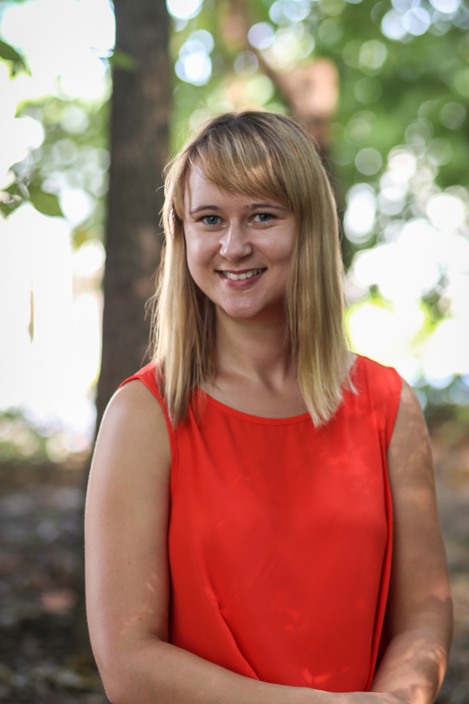

About Me
My name is Adriana Pac and I am Graphic Design student at George Mason University. Also, I am passionate about photography and UX/UI design. My goal is to make sure that systems, interfaces, language and graphic are human-friendly, aesthetically pleasing and clear to read for the audience.
